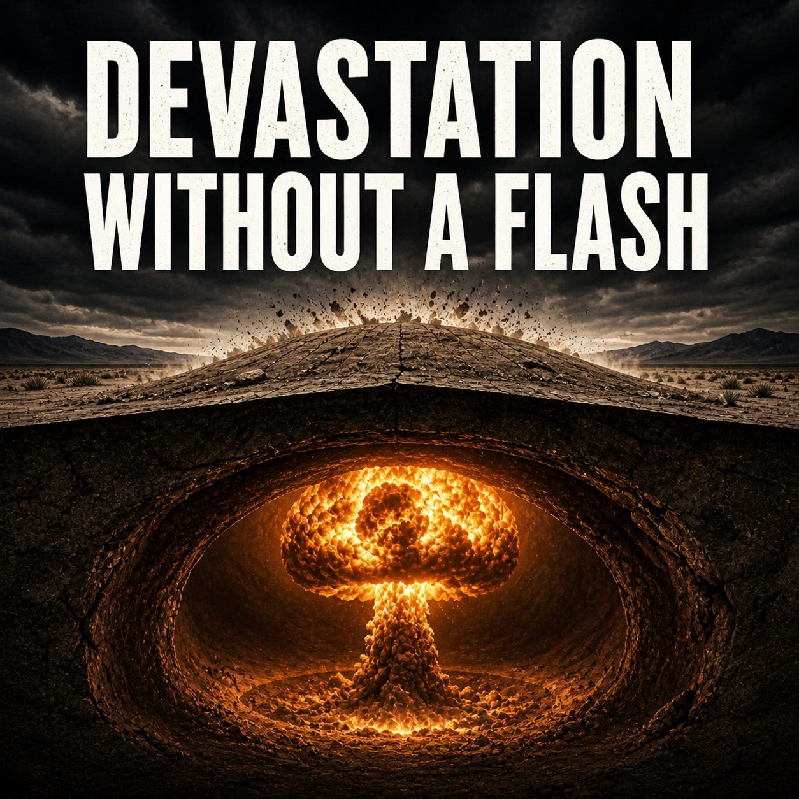

Science Integrity
The Gold Double Standard
What's behind the scientific community's response to Bhattacharya's role in a conference on scientific integrity.

In August 1945, the atomic bomb killed as many as 70,000 in Hiroshima within hours. Lead poisoning offers no such moment. Over the past century, coronary heart disease has killed on the order of 400 million people worldwide; roughly 30 percent of those deaths are attributable to lead exposure — placing the lives lost, quietly and cumulatively, at nearly 120 million.
What's behind the scientific community's response to Bhattacharya's role in a conference on scientific integrity.
Can you prompt a chatbot to actually make a bioweapon? No — and a demonstration of how a lack of expertise creates unanticipated safety hazards.
A podcast on why public health figures shouldn't be censoring scientific work, and on what it means now that the contrarians have become the institution.
Browse the working scientists, clinicians, and public health writers we follow, organized by topic area. Suggest a blog we should be reading.
Each week we publish a thread of the posts featured here, on the platforms below. Threads include the bullet summaries you see in Selected Posts on the homepage, plus a custom cover image. Follow us where you already read.
The selected posts currently featured on the homepage. The week's thread (with branded cover and bullet summaries) is published on the platforms above.
Working scientists, clinicians, and public health writers whose posts inform what gets selected each week. Organized by primary topic area. If we are missing someone you read, suggest a blog at the bottom of the page.
Recommend a working scientist, clinician, or public health writer whose posts deserve a wider audience. Email suggestions to info@scienceaccountability.org.
The latest Global Burden of Disease analysis estimates that lead exposure contributes to 3.5 million deaths annually, including nearly 30% of coronary heart disease mortality worldwide. This is not a minor revision — it is a reframing.
Lead is no longer a peripheral concern. It is a central contributor to one of the leading causes of death. It does not act solely through blood pressure; it acts directly on the artery — promoting oxidative stress, impairing endothelial function, and accelerating atherosclerosis.
The bone-lead exposure-response curve documented here aligns with what we have seen in the natural experiment of leaded-gasoline removal: as exposure declined from over 130 ppb in 1976 to below 10 ppb today, hypertension prevalence fell from one in three American adults to one in five, and coronary heart disease mortality followed a parallel trajectory. We had conducted a massive, unplanned experiment, and only now are we recognizing what it was showing us.
The implication is straightforward: cumulative lead exposure remains a major, preventable contributor to global CVD mortality. Strengthened surveillance, regulation, and remediation are not optional.
Signed, ORCID-verified comments from working scientists in environmental epidemiology, cardiovascular medicine, or related fields appear here. The first comment opens the thread.
Add a signed comment ▸The study's most consequential finding — an infection fatality rate of 0.17% — fed the belief that COVID was "no worse than the flu." That estimate proved low by a factor of four to eight, with implications that extended well beyond the paper itself.
Held against the nine "Gold Standard Science" criteria its senior author now promotes from his position at NIH, the study fails on multiple counts. The author group included economists, a hedge-fund manager, and lab scientists without prior work in antibody testing or seroepidemiology — but neither an infectious-disease epidemiologist nor an expert in antibody testing. Stanford-based investigators consulted experts who flagged concerns about the assay; those experts declined authorship.
Recruitment was conducted through Facebook advertisements despite explicit WHO guidance against advertisement-based recruitment for seroprevalence studies. The symptom screen omitted three of the six most common COVID symptoms (muscle aches, fatigue, headaches). Demographic adjustments amplified rather than corrected for self-selection bias. An email from the lead author's spouse promoting participation as a path to "peace of mind" and immunity confirmation is not mentioned in the paper.
Funding from David Neeleman, founder of JetBlue Airways, was disclosed only after external reporting; the paper's published Conflict of Interest statement reads "none." Peer review occurred at a journal where co-author Ioannidis served as an editor.
The concern is not that the study was wrong — many studies were wrong in early 2020. The concern is that the structure of the study made error likely, the direction of error predictable, and the response to those limitations insufficiently self-critical. More importantly, the senior author has positioned himself as an authority on Gold Standard Science despite the fact that his own most influential study fails to meet many of those criteria.
Signed, ORCID-verified comments from working scientists in epidemiology, infectious disease, or biostatistics appear here. The first comment opens the thread.
Add a signed comment ▸